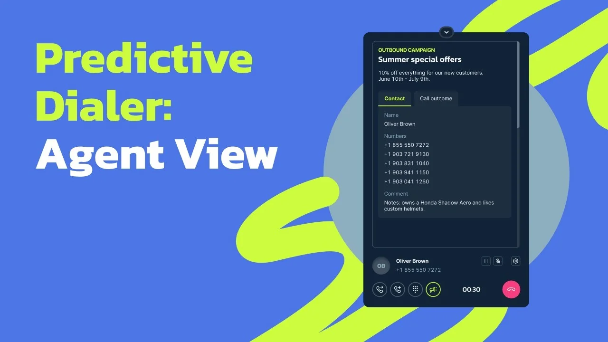

Предиктивный набор
Как повысили время активной работы операторов с 24 до 47 минут в час

Разговоры в час
47мин
вместо 24 мин, это 78% рабочего времени при норме 70–90%
Ожидание звонка
≤40сек
столько оператор ждёт следующего разговора
Потерянные вызовы
1–3%
от соединённых звонков при рекомендуемом пороге 3%
Ожидание на линии
≤3сек
от ответа контакта до соединения с оператором
Контекст и проблема
Обзвон по одному контакту перестал справляться с ростом клиентов
MightyCall — облачная телефония для бизнеса. Исходящие кампании в ней нужны для массового обзвона контактов, например для продаж, напоминаний и опросов.
Кампании работали в двух режимах. В режиме превью кампания присылает оператору в веб-фон звонок с данными контакта. Оператор принимает его, и только после этого система набирает номер. В прогрессивном система набирает следующий номер, как только оператор освободился.
Оба режима звонят одному контакту за раз. Трубку берут в среднем в 20–25% случаев, и оператор ждёт, пока система дозвонится. Для небольших команд это терпимо. Но с ростом базы контактов и числа операторов пользователи стали спрашивать, как ускорить исходящие кампании.
Объёмы. Звонки не успевали обрабатывать. Каждый звонок обходился дороже, кампании теряли эффективность.
Паузы между вызовами. В превью каждый звонок оператор принимал вручную, а в прогрессивном оператор всё равно ждал, пока система дозвонится.
Цель. Повысить эффективность операторов и убрать ручную работу между звонками, чтобы большая часть времени уходила на разговоры.
Исследование
Операторы разговаривали меньше половины рабочего времени
Подключился к проекту на этапе исследования, когда интервью с клиентами уже прошли. Посмотрел на задачу с трёх сторон.
- Статистика. Средняя занятость операторов была около 40%, это примерно 24 минуты разговоров в час. Остальное время уходило на переходы и ожидание. В превью оператор получал звонок с данными контакта, принимал его и ждал, пока система дозвонится. В прогрессивном номер набирала система, но оператор всё равно ждал, пока контакт ответит.
- Отчёт исследователей. Исследователи компании поговорили с клиентами, у которых от 20 операторов. Чаще всего клиенты жаловались на простои, ошибки при ручном наборе, перегрузку в пиковые часы и сложное управление темпом дозвона.
- Конкуренты. Большинство решений звонят с фиксированным темпом, который не подстраивается под загрузку операторов. При занятости ниже 70% теряется эффективность, а выше 90% растёт нагрузка и риск выгорания (исследование о занятости операторов).
-
Инсайт 01
Нужна динамическая нагрузка
Загрузка операторов неравномерна, и простои с очередями напрямую влияют на результат кампании.
-
Инсайт 02
Темп нужно настраивать
Клиенты хотят управлять скоростью дозвона, тайм-аутами и паузами после разговора под задачи кампании.
-
Инсайт 03
Нужна аналитика
Важно видеть, сколько звонков сделано и нет ли проблем, чтобы быстро поправить кампанию.
Идея
Система звонит заранее, пока оператор ещё разговаривает
Гипотеза
Если система будет следить за загрузкой команды и подстраивать поток звонков, операторы перестанут простаивать между вызовами
Так появился третий режим, предиктивный. Он рассчитан на крупные колл-центры, где много операторов и интенсивный обзвон. Превью и прогрессивный ждут, пока оператор освободится, и только потом звонят одному контакту. Предиктивный начинает звонить заранее и сразу нескольким контактам на одного оператора, а соединяет с оператором только тех, кто ответил. Сколько звонков нужно, зависит от контактности базы, типа номеров и времени суток.
Чтобы держать темп и не перегружать операторов, алгоритм учитывает среднюю длительность разговора, время простоя и постобработки, загрузку операторов, контактность базы и долю потерянных вызовов.
Кампания стартует осторожно. Сначала она звонит как прогрессивная, по одному контакту на оператора, и собирает статистику, затем увеличивает интенсивность. Если доля потерянных вызовов превышает заданную, темп снижается. Небольшим командам больше подходит прогрессивный режим, потому что для точного прогноза нужно достаточно операторов.
Что спроектировал
Сложный алгоритм спрятан за простыми настройками
Начал с настройки кампании в мастере, затем перешёл к рабочему месту оператора, где он принимает звонок, видит данные контакта и записывает итог разговора.
Подсказки при выборе режима. Три режима дозвона легко перепутать, а предиктивный в маленькой команде работает плохо и звонит по одному контакту на оператора. Поэтому в мастере кампании каждый режим показан карточкой с подсказкой, кому он подходит. Превью для небольших команд, прогрессивный для небольших и средних, предиктивный для крупных. Так режим выбирают по размеру команды и не разбираются в алгоритме. А если на следующем шаге в предиктивную кампанию добавлено меньше 5 операторов, мастер показывает уведомление и рекомендует добавить ещё.
Параметры выбранного режима выставляются автоматически. Если нужно, пользователь вручную задаёт темп дозвона, паузы между звонками и допустимую долю потерянных вызовов.
Данные контакта в момент звонка. В предиктивном режиме оператор не выбирает, кому звонить, и у него нет времени подготовиться. Контакт ждёт соединения с оператором не дольше 3 секунд. Поэтому звонок из кампании приходит в веб-фон сразу с названием и описанием кампании, именем и данными контакта. Оператор за пару секунд понимает, кто на линии и зачем звонок, и не ищет его в других вкладках.
Итог звонка во время постобработки. После разговора система почти сразу готовит следующий звонок, а оператору нужно записать результат. Поэтому после звонка веб-фон открывает выбор результата с таймером постобработки. Пауза получается короткой и предсказуемой, а алгоритм учитывает её, когда рассчитывает темп.
01 / 03
Аналитика. Отдельный экран для неё не понадобился. Звонки кампаний попадают в существующий раздел Reports, а в отчёте по кампаниям видна доля потерянных вызовов.
Результат
Операторы стали разговаривать почти вдвое дольше
Сначала запустили режим в тестовом виде на реальных кампаниях. Следили, удобно ли операторам работать в новом темпе, понятны ли настройки и сколько вызовов теряется.
Было
24мин
разговоров в час, занятость 40%
Стало
47мин
разговоров в час, занятость 78% при норме 70–90%
Большая часть рабочего времени теперь уходит на разговоры, а не на ручные переходы. Новый звонок при массовом обзвоне приходит оператору не позже чем через 40 секунд, а доля потерянных вызовов держится в норме, на уровне 1–3%.
После запуска число исходящих кампаний выросло. Теперь MightyCall может предлагать их крупным командам наравне с другими сервисами. Продолжаем следить за показателями режима и дорабатываем слабые места.